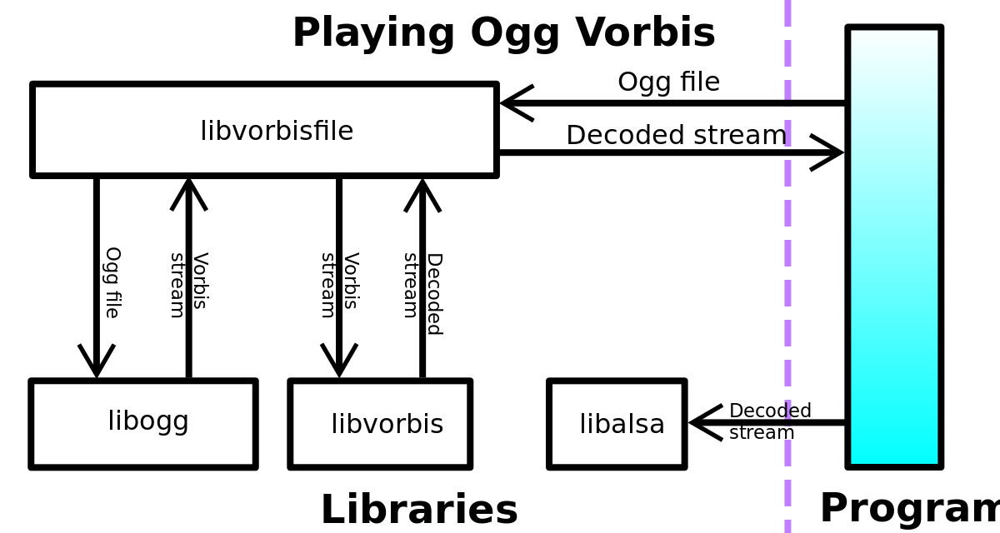

In computer science, a library is a collection of non-volatile resources used by computer programs, often for software development. These may include configuration data, documentation, help data, message templates, pre-written code and subroutines, classes, values or type specifications. In IBM's OS/360 and its successors they are referred to as partitioned data sets.
A library is also a collection of implementations of behavior, written in terms of a language, that has a well-defined interface by which the behavior is invoked. For instance, people who want to write a higher-level program can use a library to make system calls instead of implementing those system calls over and over again. In addition, the behavior is provided for reuse by multiple independent programs. A program invokes the library-provided behavior via a mechanism of the language. For example, in a simple imperative language such as C, the behavior in a library is invoked by using C's normal function-call. What distinguishes the call as being to a library function, versus being to another function in the same program, is the way that the code is organized in the system.
Library code is organized in such a way that it can be used by multiple programs that have no connection to each other, while code that is part of a program is organized to be used only within that one program. This distinction can gain a hierarchical notion when a program grows large, such as a multi-million-line program. In that case, there may be internal libraries that are reused by independent sub-portions of the large program. The distinguishing feature is that a library is organized for the purposes of being reused by independent programs or sub-programs, and the user only needs to know the interface and not the internal details of the library.

Library code is organized in such a way that it can be used by multiple programs that have no connection to each other, while code that is part of a program is organized to be used only within that one program. This distinction can gain a hierarchical notion when a program grows large, such as a multi-million-line program. In that case, there may be internal libraries that are reused by independent sub-portions of the large program. The distinguishing feature is that a library is organized for the purposes of being reused by independent programs or sub-programs, and the user only needs to know the interface and not the internal details of the library.
The value of a library lies in the reuse of standardized program elements. When a program invokes a library, it gains the behavior implemented inside that library without having to implement that behavior itself. Libraries encourage the sharing of code in a modular fashion and ease the distribution of the code.
The behavior implemented by a library can be connected to the invoking program at different program lifecycle phases. If the code of the library is accessed during the build of the invoking program, then the library is called a static library. An alternative is to build the executable of the invoking program and distribute that, independently of the library implementation. The library behavior is connected after the executable has been invoked to be executed, either as part of the process of starting the execution, or in the middle of execution. In this case the library is called a dynamic library (loaded at runtime). A dynamic library can be loaded and linked when preparing a program for execution, by the linker. Alternatively, in the middle of execution, an application may explicitly request that a module be loaded.
Most compiled languages have a standard library, although programmers can also create their own custom libraries. Most modern software systems provide libraries that implement the majority of the system services. Such libraries have organized the services which a modern application requires. As such, most code used by modern applications is provided in these system libraries.